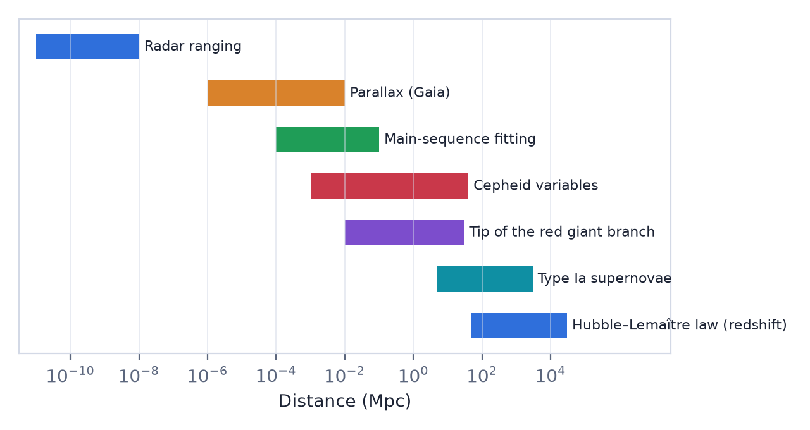
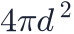
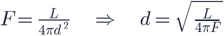

In this lesson you will learn
|
The hardest measurement
A photograph of the sky is flat. A faint star might be a weak star nearby or a brilliant one far away. Measuring the brightness, colour or position of an object is comparatively easy; measuring its distance is one of the central challenges of astronomy.
No single technique works from the Solar System to the edge of the observable universe. Instead astronomers use a chain of overlapping methods, the cosmic distance ladder. Each rung is calibrated using the rung below it.

Rung 1: radar and parallax
Inside the Solar System, distances are measured by bouncing radar signals off planets and timing the echo. This fixes the astronomical unit very precisely.
With the AU known, parallax gives distances to nearby stars by pure geometry (lesson L0.2): . The European Gaia satellite has measured parallaxes of more than a billion stars, reaching thousands of parsecs for the brightest.
Geometry is the foundation Parallax needs no assumptions about what stars are like. Every other method ultimately depends on it, so errors at this rung propagate all the way up the ladder. |
Standard candles and the inverse-square law
Beyond parallax we use standard candles: objects whose true brightness we know. The light of a source spreads over a sphere of area

, so the flux
If we know  and measure
and measure  , we get
, we get  . Move a lamp twice as far away and it
looks four times fainter.
. Move a lamp twice as far away and it
looks four times fainter.
Magnitudes Astronomers often express brightness in magnitudes, a logarithmic scale where
larger numbers mean fainter. The difference between apparent magnitude |
Rung 2: Cepheid variable stars
Cepheid variables are giant pulsating stars whose brightness rises and falls with a period of days to months. In 1912 Henrietta Swan Leavitt, studying Cepheids in the Small Magellanic Cloud, discovered that the brighter a Cepheid is, the longer its period: the period–luminosity relation (also called the Leavitt law).
So: measure the period, read off the luminosity, compare with the observed flux, and obtain the distance. Cepheids are bright enough to be seen in galaxies tens of millions of parsecs away. Their relation is calibrated with Cepheids in the Milky Way whose distances are known from parallax.
Hubble and Andromeda In 1923–1924 Edwin Hubble found Cepheids in the Andromeda "nebula". Their distance showed it lies far outside the Milky Way: Andromeda is a galaxy in its own right. The universe suddenly became vastly larger. |
Rung 3: Type Ia supernovae
For truly cosmological distances we need something far brighter. Type Ia supernovae are thermonuclear explosions of white dwarf stars. At their peak they can outshine an entire galaxy, and their peak luminosities are very similar. After a correction based on how quickly they fade (brighter ones fade more slowly), they are excellent standardisable candles, visible billions of light-years away.
They are calibrated in nearby galaxies that host both a Type Ia supernova and Cepheids. In 1998 Type Ia supernovae revealed that the expansion of the universe is accelerating (lesson L3.3).
Rung 4: redshift
At the top of the ladder, the Hubble–Lemaître law connects a galaxy's redshift with its distance. Once calibrated with the lower rungs, measuring a redshift (which is easy) gives a distance. The next lesson explains this law.
Distances are uncertain Each rung adds uncertainty. Hubble's own distances in 1929 were too small by a factor of about seven, because the Cepheid calibration of his time was wrong. Today's best distances are accurate to a few percent, and small disagreements between methods are an active research topic. |
Try it: Hubble Diagram Fitter Load Hubble's 1929 data and see how a distance calibration error changes the slope. |
Remember this
|